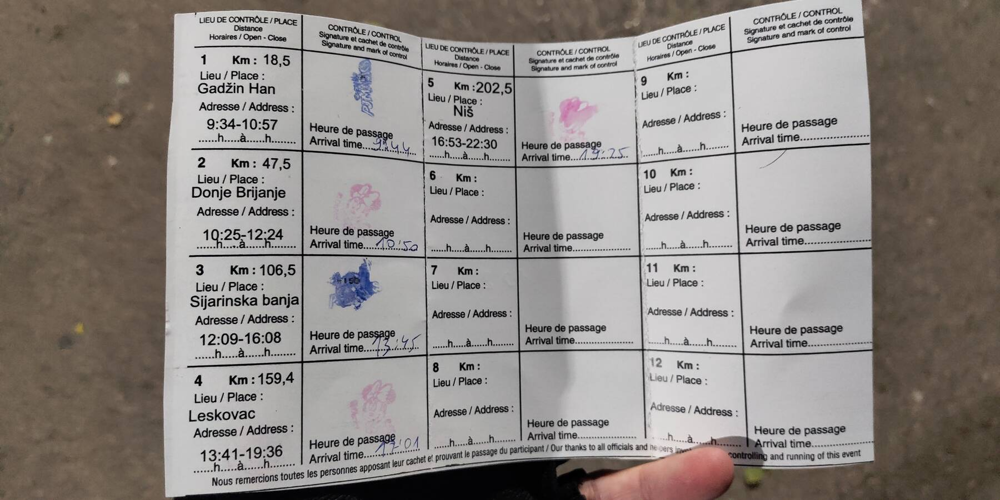

С того самого момента, как я весной купил велосипед, в голове жужжала назойливая мысль: я обязательно должен проехать в этом году юбилейный бревет 200км. Одиннадцатого сентября. Сто лет Brevets de Randonneurs Mondiaux. Сто лет марафонской движухе. Должен. Сто. Двести. Бжжжж…
Всю весну и лето старался хотя бы раз в неделю выкатываться минимум на 50, а лучше что-то в районе 100км. Ощупывал покрышками асфальт окрестностей Нови Сада, закатывался в горки (оо, Иришки венац, 4 километра нон-стоп 8%) и набирал объём вдоль Дуная. Поменял седло на дорогущее SQ-Lab, заточенное строго под определённую (мою) ширину седалищных костей. За пару недель до бревета нашёл для тренировок шикарную горку недалеко от дома. Поставил топовую лёгкую и катящую резину. В общем, готовился как мог.
Веломарафонский клуб Randonneurs Serbia в этом году проводил аж три юбилейных бревета: один в Суботице, второй в Ужице и третий в Нише. Нишский бревет — самый далёкий, мне только до старта ехать 350км по автобану. Ужицкий злющий, набор аж 3500м, серьёзные горки, я не осилю. Очень хотел поехать в Суботицу: рельефа нет, проеду точно. Но маршрут был спланирован так, что часть трассы проходила по Венгрии. Мало того, что визы у меня нет, так ещё и погранпереходы выбраны локальные: только для граждан ЕС или сербов/венгров. Что ж, еду в пятницу, после работы, в Ниш.
Я думал, что удачно выбрал гостиницу: самый центр города, меньше километра до старта. А оказалось, что прямо под ней находится кабак, в котором дикими голосами поют живую музыку аж до двух ночи. Спалось так себе.
Утро субботы, старт в девять. Около 50 человек на старте, все на совершенно разных машинах. Породистый карбон соседствует с чугунными «типа маунтинбайками», оборудованными подножкой. Тем не менее, не финишировали только двое, что подтверждает тезис о том, что лишь бы было желание доехать. Особенно на двухсотке.
Последний раз 200 я ездил году эдак в 2009-м, и рельефа там было вообще ноль. Я понятия не знал, насколько меня хватит и когда я сдохну (если сдохну), поэтому, экономя силы, поехал где-то 28-29км/ч. Довольно быстро допилил до первого КП, где заполучил банан и пополз в горку. Тут надо сказать спасибо тренировкам на Фрушке-горе: к подъёмам я был готов на 100%. Я знал, как их ехать и знал свои ощущения.
На плоском участке мимо пролетел пелетончик из быстрых товарищей, они жарили около 35-40. Был велик соблазн увязаться с ними, но скилл групповой езды у меня протух уже очень давно, да и мощу надо было экономить. Поэтому нет, allure libre. :)
Вообще хочется выразить большое спасибо тем, кто проложил маршрут. Несложные тягуны градиентом 3-5% сменялись головокружительными затяжными спусками под 60км/ч, всё это по идеальному асфальту и в окружении живописных холмов. Очень чётко понимаешь разницу между таким вот приятным маршрутом и тупой пилёжкой по прямой с нулевым градиентом. Не в пользу равнины, естественно.

Наконец начался «аппендикс» восьмёрки маршрута — хвост от Лебане до Сияринской Бани. 30 километров преимущественного подъёма в одну сторону и те же 30км, но уже преимущественного спуска — в другую. Я побаивался этого участка. Во-первых, это длинный тягун. Во-вторых, на гуглопанорамах там довольно разбитый асфальт. Но оказалось, что асфальт относительно недавно положен, а подъём всё же разбавлен коротенькими спусками, на которых успеваешь хоть немного отдохнуть.
Тут же поймался и секретный КП: в Лебане мы должны были дважды переехать через речку, чтобы избежать пешеходного центра города. Вот сразу после моста и был контроль: кто срежет 50м и проедет против правил, бревет не проехал. Ловко. Жаль только, что я зазря купил воду в магазине. Сначала не было продавца, потом он долго считал сдачу… В общем, потерял где-то 10 минут буквально за сто метров до КП, где и так была вода.
Перед Сияринской Баней, точкой разворота, пошли первые встречные рандоннёры. Считал, каким я приезжаю на серединный КП: вот передо мной трое… Семеро… Оказалось, что я где-то в первой двадцатке. Неплохо! На КП получил уже успевшие надоесть сладости и покатил назад.
Надо сказать, что дома у меня была заготовлена специально к бревету дегидрированная курятина. Я её сам делаю в духовке, с солью, специями, под пиво идёт офигенно. Взял с собой, чтобы сожрать в середине пути и не тратить время на общепит. А она, сволочь, успела в сумке на жаре немного испортиться. Обидно капец, но ничего не поделаешь, выбросил. Засесть с животом на полчаса-час в кустах где-нибудь в пятнадцати километрах от финиша совсем не хотелось.
Добрался до Лесковца, в нём очередной КП: нужно сделать фотографию главной городской почты. Проехал мимо: здание почты как-то не выделяется из других зданий. И если не знать, что она где-то здесь, пропустишь. Пока сообразил, что я уже почти на выезде из города, пока поискал в OSM почту (не нашёл), пока спросил у прохожих дорогу, пока вернулся в центр — ещё минут пятнадцать прошло. Сфотографировался, попилил на финиш. Последние сорок километров.
И вот тут стало скучно. Плоскач, большие расстояния между деревнями, рядом жужжит автобан — зачем я здесь? Что я здесь делаю?.. Поехалось как-то вяло. Остановился перекусить, насилу запихал в себя сладкое, ибо уже начал чувствовать, что заголодал. Организм усиленно хотел мяса (вот той самой сушёной курятины!), а не шоколадок и орешков.
Докатился до последнего набора высоты, что перед Нишем. Он так-то вовсе несложный, но я понял, что из-за тупняков с покупкой воды и поиском почты у меня не вышло выехать из 10 часов, как я планировал изначально. Заленился и последние сто метров подъёма прошёл пешком. Тем временем стемнело, и последние десять километров до финиша я катился под горку со светом фары, пригодившейся ровно на эти последние километры.
Проехал дистанцию за 10 часов 25 минут (трек на страве), это на три часа меньше лимита. Хороший результат для меня, особенно учитывая то, что как раз эти 25 минут я потратил на тупняки. Приятно, что довольно точно оценил свою кондицию. Ехал достаточно ровно, кстати:

Организация бревета просто невероятно крутая. Особенно это ощущается после стольких лет жизни в Сербии: контраст со всеобщим разгильдяйством сумасшедший. На всех КП (кроме двух с фотоконтролем) был собственно сам организатор (разъезжающий с сыном на личном автомобиле), вода, еда и всё такое. Я не понимаю, как ему удалось всего за 2.5 евро с брата накупить столько бананов, батончиков, мюсли, бисквитов, каких-то печенек, конфет… Бензин, опять же, на круг. Карточки напечатать на всех. В общем, это потрясающе. Всё было супергладко и приятно. Очень доволен и мероприятием, и маршрутом, и тем, как проехал. Спасибо, Мичо!
.jpg)
P.S.: Что удивительно, ни на финише, ни на утро ничего не болело: ни спина, ни руки, ни колени, ни связки, ни задница. Это прям вот мега-круто! Значит, и седло подобрано правильно, и посадка, и мышцы спины я за зиму успел достаточно укрепить в зале. В этом сезоне должны быть ещё две двухсотки, если получится — скатаю и их. Но уже в гедонистском стиле, в более расслабленном темпе и с нормальным обедом посередине. А в следующем году хочу и 300 пойти, надеюсь, уже буду готов.